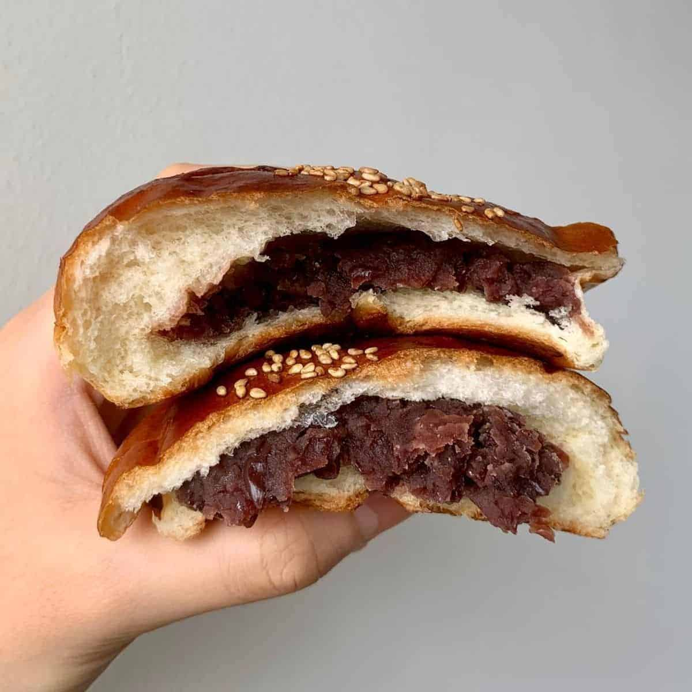

Antonio's Gramman

Description:
Steamed bread stuffed with Japanese chestnuts and azuki beans is a delightful Japanese confection, known as "kuri
an manju" in Japanese. The soft, pillowy steamed bread, or "manju," encases a sweet and earthy filling made from
tender chestnuts and a sweet red bean paste known as "azuki."
Ingredients:
- 120g flour
- 60g sugar
- 1 tbsp vegetable oil
- 1 egg
- Milk, roughly 120ml
- 160g Tsubu anko
- 4 candied chestnuts
Steps:
- Cut candied chestnuts in half. Place egg in a bowl.
- Add milk until the liquid weighs 120mL. Add sugar and vegetable oil, and mix well.
- Vigorously stir flour and baking powder into bowl. Beat with an eggbeater/whisk until all flour is mixed
- Using a spoon, fill paper cups halfway with mixture. Evenly divide anko and place a spoonful in the middle of each cup
- Place 1 chestnut piece per cup.Place cups in steamer. Put on the lid, and steam on low for 10 minutes.
- Poke with bamboo skewers, when nothing sticks, they are done.
Enjoy!!